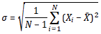

Experimental errors calculator
Standard Deviation
The standard deviation(σ) is:
Experimental values
The maximum probable error is:
What sources of error are there?
There are three general types of errors which may distort experimental outcomes:
- Human error
- Systematic error
- Random error
Human errors are mistakes made by the experimenter. Such mistakes may come up when for example the experimenter has made a miscalculation, misread the indications of an instrument or even if the experiment itself is not set up correctly. The accuracy of the experiment lies a great deal in eliminating human errors. The experimenter must be certain that the experiment worked properly and that all necessary factors have been taken into consideration. Human errors are not experimental errors.
Systematic error is an error that occurs in all measurements of an experiment and it is due to the instrument or the experimental set up. Systematic errors effect all measurements in the same way, meaning either increasing or decreasing the value by the same amount. In order to produce an accurate result all systematic errors must be eliminated. The diminish of systematic errors can be done by changing experimental conditions or the experimental setup.
Systematic errors are related to the precision of the instrument. For example, lets's assume that one attempts to measure the length of a straight line with a common ruler which has scaled divisions every 0,1cm. If the actual length of the line is 3,48 cm the experimenter would measure 3,5 cm. So, the precision of the measurement depends on the precision of the instrument. In the case of the line, the correct answer would be (3,5±0,1) cm; meaning that the length of the line is between 3,4 and 3,6 cm. Thus, all measurements should be accompanied by an error factor, also called reading error, which corresponds to the smallest subdivision of the instrument.
Another systematic error stems from the wrong calibration of an instrument. For example, if a speedometer has as initial value 10m/s instead of zero, than all measurements would have a systematic error of 10m/s.
Systematic errors however, don't only occur due to the precision of instruments but also due to the experimental set up. If for example one is performing an experiment about the free fall of objects in a non-vacuum environment, then the resistance of air would produce a systematic error to all measurements.
Random errors are errors that occur because when making repeated measurements during an experiment, it is practically impossible to reproduce the exact same conditions every time. Random errors usually cause small variations among measurements but some times a measurement may be too small or too big compared to the rest. Such measurements have to be excluded from the set of data. In order to reduce this kind of errors the experimenter should repeat the measurements as many times as possible
Introduction
When conducting an experiment using laboratory equipment and not simulations, the measurements of any physical quantity can never be 100% accurate. The deviation between an experimental value and the actual true value of a quantity can be due to many reasons which we usually refer to as
error factors. Such factors can for example be the accuracy of the measuring tool, the experimental set-up used or random mistakes made by the experimenter.Let's have a look at the following example.Say we are asked to measure the diameter of the ball in the image below.
If we use a ruler to measure the diameter, the answer would be 6,2 cm. However, if we measure the ball using a micrometer, which is a more accurate instrument, the answer would be 6,1845 cm. The deviation between these two measurements is due to the presence of error factors. In this case, the error is mainly coming from the accuracy of our instrument. Still, even the measurement with the micrometer, which is a more accurate instrument, could still deviate from the true value. The source of error there could be for example to the calibration of the instrument.
Accuracy and precision of measurements
Although accuracy and precision have similar meanings, in math and science they have different definitions which we need to be aware of.
Accuracy is a measure of how close a measurement is to the true value of a quantity. This can be determined by calculating the percentage error of a measurement.
Precision on the other hand means that a set of independent measurements of the same quantity have low deviation. This can be determined by calculating the standard deviation of our measurements.
The
Calculation of experimental error factors tool will help you in calculating different types of errors so you can have a better assessment of your result when performing experiments.
Error propagation
Error propagation
When making an experiment, it is often the case that we can't measure directly the quantity we want. Instead, we measure other ones that when combined, provide us with the desired quantity. For example we cannot measure the density of a material directly. To achieve that, we have to take measurements of mass and volume and then use the formula to calculate the density. So, what is the error of a measurement in such a case?
The error of our measurement depends on the combination of the individual measurements, or in other words in the type of formula we are using. Thus we have to use each case separately. In all the cases below we refer to 'A' as the quantity we seek to measure through other quantities; x, y, z as the measured quantities A depends up on; and 'c' is a given constant. So in our previous example A would be the density and x,y would be the mass and volume respectively while we have no z and no c in our equation. Respectively the errors for each quantity are δΑ, δx, δy and δz.
Multiplication with a constant
If A is the product of multiplying a quantity with a constant (called 'c')
Then the error δΑ for A is
Addition or subtraction of measured quantities
If A is the sum or difference of x, y and z (it makes no difference whether we have '+' or '-')
Then the error δΑ for A is
Multiplication or division of measured quantities
If A is the product of x,y and z (it makes no difference if it is multiplication or division) and a constant c (if there is no constant in your equation just set c=1)
Then the error δΑ for A is
Polynomial functions
If A is a polynomial function of one variable, x (c again being a constant)
Then the error δΑ for A is
Systematic errors are errors which occur in all measurements when performing an experiment.
Before starting your experiment, you need check your instruments for possible zero error. To do that, set your instrument to zero and check its indication. Does it say zero or does it give another value? If so, that value is considered to be a systematic error and you will have to correct all your measurements by subtracting it.
The theoretical value of a quantity can refer to different things. If we are trying to verify a given theory then the theoretical value is the value derived from the respective mathematical equation.For example, let's say we are performing an experiment to measure the time in which an object will reach the ground from a given height according to the laws of free fall. Then, the theoretical value will be the one derived from the equationwhereas the experimental value would be the one we actually measured during the experiment using a stop watch.
Another case is when we are measuring quantities whose value is already known from the bibliography. For example, let's say we want to measure the density of glycerin. In that case, in our experiment we would be taking measurements of mass and volume and calculate the density using the equationThe theoretical value would be the one derived from bibliography which is 1.261 g/cm3.
The experimental value is the one measured while performing an experiment. If you have collected a set of measurements, the experimental value is the mean of the set of measurements.
When we present a measurement it is also important to present the error of that measurement. We usually accompany our measurement with either the absolute error, or the relative error. In some cases we might also wish to present the relative error as percentage errors. Presenting the absolute or the relative error along with the actual measurement allows people to decide to what degree our measurement is valid and reliable.
The absolute error is the magnitude of the difference between the theoretical and the experimental value.
The relative error is the absolute error divided by the magnitude of the theoretical value. Ideally the relative error must be zero or very close to zero.
The percentage error is the relative error expressed in terms of percentage.
Error in an average:When repeating the same measurement a number of times, we produce a set of values and then the average value is calculated. Respectively, one must also calculate the average error.
Standard deviation (σ) is a statistical measurement that is used to illustrate the spread of an experiment's values relative to an average value or standard value. Low standard deviation means that the values are close to the mean value. Thus, the lower the standard deviation is, the more reliable our measurements are. In the picture below, both set of measurements have the same mean value. The measurements on the left have a high standards deviation whereas the measurements on the right have low standard deviation.
However, you must always keep in mind that low standard deviation only indicates that the set of measurements have a good precision. High precision means that the measurements have high reliability but this does not mean that the average value is true. Thus the standard deviation can inform us on how precise our measurements are but it cannot inform us on how precise they are (meaning how close to the true or theoretical value).
The formula to calculate the standard deviation is:

The maximum probable error is the maximum deviation from the mean.